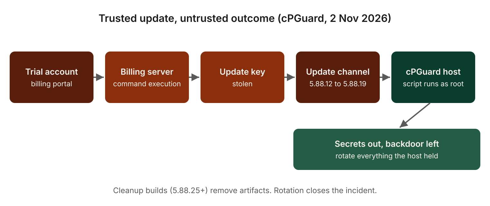

cPGuard Update Channel Hijacked: Rotate Secrets Before You Call It Done
Updating cPGuard removes the backdoor. It does not unsteal /etc/shadow. That is the uncomfortable version of the OPSSHIELD cPGuard incident.

Attackers used compromised credentials to reach OPSSHIELD’s update distribution infrastructure and pushed a malicious script through the cPGuard update channel on 2 November 2026. Versions 5.88.12 through 5.88.19 were in the bad set. OPSSHIELD told BleepingComputer that 2,946 servers were affected.
The script ran as root. It collected password hashes, database config, shell history, and SSH material, and it left a hidden root shell. OPSSHIELD released cleanup builds at 5.88.25+.
If your response stops at “we updated cPGuard,” you misunderstood the incident class. This was trusted distribution turning into remote root, then credential theft. Cleanup removes known artifacts. It does not rotate a single secret.
Why security agents are a special blast radius
cPGuard is a Linux web security suite. It is supposed to harden hosting servers. That means it often runs privileged, updates automatically, and is trusted by design.
When the update path is poisoned, customers who did the “right” thing (stay current) become the victims. That inversion is the story. Patch culture without update authenticity controls is incomplete.
SecurityWeek’s writeup adds useful vendor timeline detail: trial account reconnaissance against billing and licensing, command execution on that server, stolen update storage key, and a distribution window of roughly 70 minutes on 2 November, with detection inside about 12 hours. Servers that checked for updates between about 02:08 and 03:20 UTC got the script; servers offline in that window did not (CSA research note). OPSSHIELD also reported roughly 7,900 billing portal account records copied, including hashed passwords.
What defenders should do on hosts that ran bad builds
Confirm exposure
- Search the install log:
grep 'Successfully updated' /opt/cpguard/logs/install_log. Any entry for 5.88.12 through 5.88.19 means OPSSHIELD says to treat the server as potentially compromised, even if it now runs a fixed build. - A missing or incomplete log does not prove the server was clean. Neither does a clean current version.
Contain
- Preserve forensic copies of suspicious paths before cleanup if you may need them.
- Limit outbound egress from suspect hosts while you investigate.
- Run
cpgcli update --startand confirm 5.88.25 or later. Capture the IOC paths below first if you need evidence, because the cleanup build deletes them. - OPSSHIELD does not currently recommend a routine OS rebuild. If the vendor tells you an operator logged in to your server by hand, or you find indicators beyond the known set, rebuild from a backup taken before 1 November.
Assume secret loss
Rotate, do not “monitor for weird logins” as your only move:
- Local Linux passwords and hashes
- Root and service SSH keys, authorized_keys entries, known_hosts trust where relevant
- MySQL/MariaDB root and app database credentials
- Cloud keys found in root home configs
- OPSSHIELD / billing portal passwords and API keys
- Any secrets that appear in root shell history
OPSSHIELD estimates the attacker retrieved 32 files, each tied to one server, and calls that finding preliminary. That should not comfort you. A preliminary retrieval count is not total exposure across 2,946 hosts.
Hunt persistence
The indicators OPSSHIELD published (via Rescana and Cyber Security News):
- Script:
cpguard-v58812-i91511.sh - Backdoor shell:
/var/tmp/.cpg91511_sh - Collection directory:
/var/tmp/.cpg91511, with the staged archive at/var/tmp/.cpg91511/loot.tgz - Main operator IP:
94.183.188.91
The cleanup build removes those files, so their absence after updating proves nothing. Check backups, snapshots and EDR file telemetry from 2 November instead. Beyond the known set, look for unexpected cron entries, unfamiliar setuid binaries, and secondary SSH keys. Then look for boring follow on: new admin users, unexpected sudoers changes, and odd scheduled tasks that have nothing to do with cPGuard filenames.
Detection ideas for hosting providers and MSPs
If you manage fleets:
- Alert on security agent version jumps into the known bad range during the 2 November window
- Monitor for mass secret file reads by unusual parents (update scripts touching
/etc/shadow, root.ssh,.my.cnf) - Watch for hidden directories and archives under
/var/tmp(the known set used.cpg91511andloot.tgz) - Search egress logs for
94.183.188.91from 2 November onward - Track sudden SSH auth from new keys after the incident date
- Treat billing portal password reset campaigns as mandatory, not optional comms
MSPs should assume multi tenant impact reviews. One poisoned agent update can cross customer boundaries in your management plane even when customer apps are unrelated.
Hardening the next update channel
This incident is also a design reminder:
- Signed updates with keys that are not sitting beside the billing system
- Separate build signing from customer portal credentials
- Short lived update publishing credentials
- Customer visible version transparency and rapid bad version revocation
- Out of band admin notification when a security product update is later declared malicious
Customers cannot uniquely prevent a vendor CDN compromise, but they can demand attestation, pin versions in high assurance environments, and stage updates instead of blind auto apply everywhere.
Comms template for hosting customers
If you are an MSP or hosting provider, say the quiet part out loud in the ticket:
We installed a security agent update during a vendor compromise window. The vendor has shipped a cleanup build. Because the malicious update ran as root and targeted credential files, we are rotating server secrets and checking for persistence. A green version number alone is not closure.
That message prevents customers from assuming the incident was “just malware that got cleaned.”
Checklist
- Identify hosts that installed 5.88.12 through 5.88.19
- Upgrade to vendor cleanup builds
- Rotate OS, DB, SSH, cloud, and portal secrets
- Hunt for leftover shells, cron, and keys
- Reset OPSSHIELD billing access and enable stronger auth
- Review whether auto update trusts need staging
- Decide which fleets keep auto update versus staged rollout
A security product can be both helpful and a privilege concentrator. When its update path fails, your incident response has to sound like credential theft response, not like routine patching.
Sources
- OPSSHIELD: cPGuard security advisory, update channel compromise
- BleepingComputer: hackers hijack cPGuard autoupdate to deploy backdoor, steal data
- SecurityWeek: malicious cPGuard updates served in OpsShield supply chain attack
- The Hacker News: cPGuard update channel hijacked
- Cloud Security Alliance research note: cPGuard update hijack
- Rescana: cPGuard OPSSHIELD update channel compromise (indicators)
- Cyber Security News: cPGuard supply chain attack
- SecurityOnline: cPGuard supply chain attack